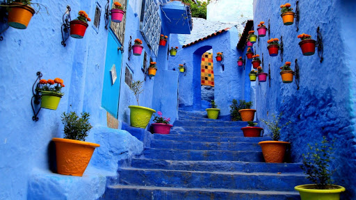

Welcome to my profile 😄
I am 17, I come from Tangier in Morocco and I am currently studying at ESSEC Business School. My three main passions in life are football ⚽️, rap music 🎧 and new technologies 📱.
Come and visit my coutry!Football ⚽️
I have always loved football since I was a kid. Unfortunately my talent has never been as big as my passion. My favorite football club is FC Barcelona because I have always loved the way they play the game and the club's strong identity.

Rap music 🎧
I started listening to rap music when I was about 12 and never stopped since then. My favorite rappers are Orelsan, PNL, Vald and Damso.
My home country 🇲🇦
I am really attached to my country and now that I am far away, I realise how much I really love it. Moroccan people are exceptionnal and we have the chance to have one of the most beautiful countries in the world.
